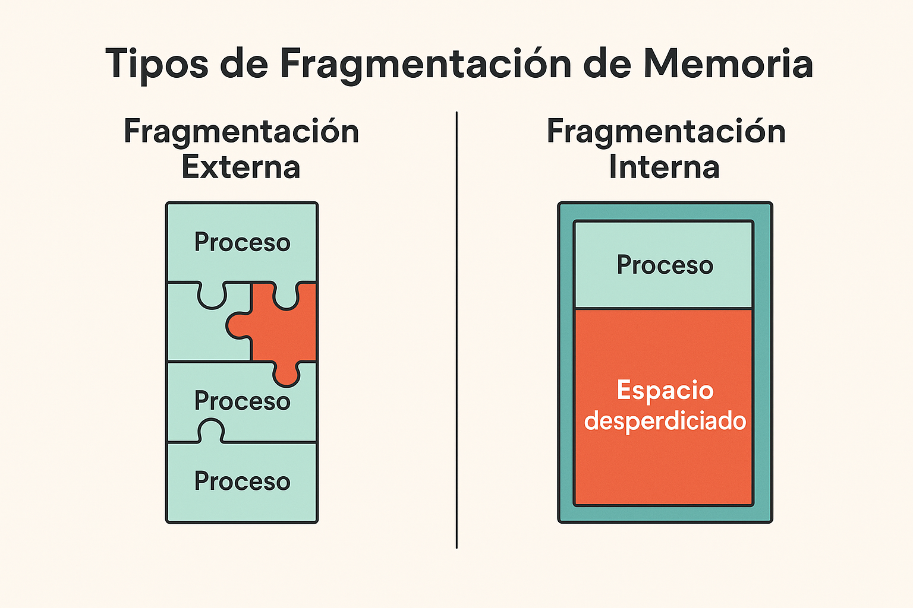

┌─────────────┐ 0x0000
│ SO │
├─────────────┤ 0x1000
│ Proceso A │
├─────────────┤ 0x3000
│ Proceso B │
├─────────────┤ 0x5000
│ Libre │
└─────────────┘
MMU (Memory Management Unit): Traduce direcciones lógicas a físicas
Fórmula de traducción (reubicación):
Dirección Física = Dirección Lógica + Registro Base
CPU
Dir. Lógica: 0x0500
MMU
+ Registro Base: 0x4000
Resultado
Dir. Física: 0x4500 ✓
Binding de Direcciones
¿Cuándo se asignan las direcciones de memoria?
Etapa
Momento
Descripción
Compile time
Compilación
Direcciones absolutas fijas. Si cambia ubicación, recompilar. (MS-DOS .COM)
Load time
Carga
Direcciones relativas, traducidas al cargar. Si cambia, recargar.
Execution time
Ejecución
Direcciones lógicas traducidas en tiempo real por MMU. (Sistemas modernos)
Ciclo de vida de las direcciones:
CÓDIGO FUENTE
prog.c
→
COMPILACIÓN
prog.o (relativo)
→
CARGA
En memoria (físicas)
→
EJECUCIÓN
CPU accede (MMU traduce)
Carga Dinámica
Cargar rutinas solo cuando se necesitan
Idea: Mantener solo el código frecuentemente usado en memoria; cargar funciones raras desde disco solo cuando se llaman.
PROCESO GRANDE (1MB de código total)
┌──────────────────────────────────────┐
│ Funciones frecuentes (cargadas) │ ◄── Siempre en memoria
├──────────────────────────────────────┤
│ Función rara_1() │
│ ┌──────────────────────────────┐ │
│ │ Código en disco │ │ ◄── Solo se carga
│ │ (no ocupa RAM) │ │ si se llama
│ └──────────────────────────────┘ │
├──────────────────────────────────────┤
│ Función rara_2() │
│ ┌──────────────────────────────┐ │
│ │ Código en disco │ │
│ │ (no ocupa RAM) │ │
│ └──────────────────────────────┘ │
└──────────────────────────────────────┘
Beneficio: Menor uso de memoria, más procesos residentes
Implementación:
Stub (parche): Pequeño código en lugar de la función real
Stub carga la función desde disco y la ejecuta
Windows DLLs, Linux shared libraries usan concepto similar
Overlays
Técnica histórica para programas > memoria disponible
Memoria disponible: 64KB
Programa: 150KB (no cabe completo)
Solución: Dividir en overlays que se alternan
Overlay 0 (residente): Overlay 1: Overlay 2:
┌──────────────────┐ ┌──────────┐ ┌──────────┐
│ Código base │ │ Fase 1 │ │ Fase 3 │
│ + Driver E/S │ │ Análisis │ │ Reporte │
├──────────────────┤ └──────────┘ └──────────┘
│ │ ▲ ▲
│ Espacio para │────────────┴────────────────────┘
│ overlay │
│ (64KB - base) │ Solo un overlay cargado a la vez
└──────────────────┘
Flujo: Base carga → Fase 1 → (reemplaza) → Fase 3
Nota: Hoy en día rara vez se usa (memoria virtual lo reemplaza)
Asignación Contigua
Cada proceso ocupa un bloque continuo de memoria
0 MB
Sistema Operativo
100 MB
Proceso A (200KB)
300 MB
Proceso B (150KB)
450 MB
LIBRE (550KB)
1 MB
Fin de memoria
Idea clave: El proceso ocupa un bloque seguido, lo que simplifica la traducción de direcciones, pero dificulta la entrada de procesos grandes cuando hay huecos dispersos.
Partición Fija
Memoria dividida en particiones de tamaño fijo
PARTICIONES FIJAS
256KB
Proceso A (200KB)
░░░ 56KB libre
256KB
Proceso B (256KB)
256KB
LIBRE
ASIGNACIÓN
Proceso A
█████░░░░ 56KB
Fragmentación interna
Proceso B
███████████
LIBRE
Problema: Fragmentación interna (espacio desperdiciado dentro de particiones)
Partición Variable (Dinámica)
Particiones del tamaño exacto que necesita cada proceso
INICIAL
SO
Sistema Operativo
A
Proceso A (200KB)
B
Proceso B (150KB)
C
Proceso C (300KB)
Libre
LIBRE
DESPUÉS DE LIBERAR B
SO
Sistema Operativo
A
Proceso A (200KB)
Hueco
HUECO (150KB)
C
Proceso C (300KB)
Libre
LIBRE
Problema: Fragmentación externa (huecos entre procesos)
Fragmentación
Dos tipos de desperdicio de memoria

Fragmentación interna vs externa: dos caras del mismo problema
¿Por qué ocurre la fragmentación?
Interna: Se asigna más memoria de la solicitada (particiones fijas)
Externa: Procesos cargados y descargados dejan "huecos" entre ellos
Consecuencia: Memoria disponible pero inutilizable para procesos grandes
Tipo
Causa
Dónde ocurre
Interna
Proceso no usa toda su partición
Partición fija
Externa
Huecos entre procesos
Partición variable
Ejemplo de Fragmentación Externa:
A (usado)
HUECO 50KB libre
B (usado)
HUECO 30KB libre
C (usado)
HUECO 40KB libre
Total libre: 120KB PERO NO podemos cargar un proceso de 100KB
(huecos no son contiguos)
Estrategias de Asignación
¿Qué hueco elegir para un nuevo proceso?
Escenario: Proceso nuevo: 80KB
Huecos disponibles: 100KB, 200KB, 90KB, 150KB
Estrategia
Descripción
Elige
Comentario
First Fit
Primer hueco suficiente
100KB
Rápido, buenos resultados generales
Best Fit
Hueco más pequeño suficiente
90KB
Deja huecos pequeños (inútiles)
Worst Fit
Hueco más grande
200KB
Deja huecos grandes (útiles)
¿Cuál es mejor?
First Fit: Rápido, buenos resultados generales
Best Fit: Puede crear muchos huecos pequeños inutilizables
Worst Fit: Produce pocos huecos grandes, más útiles
Compactación
Solución a la fragmentación externa
ANTES
A
HUECO
B
HUECO
C
HUECO
DESPUÉS (compactación)
A
B
C
LIBRE (120KB contiguo)
Problema: Costoso (hay que mover procesos en memoria, reubicar direcciones)
Requisitos para compactación:
Relocación dinámica (direcciones lógicas vs físicas)
Tiempo de CPU para mover datos
Posible pausa en la ejecución de procesos
Swapping
Mover procesos entre RAM y disco
MEMORIA RAM
SO
Proceso A
Proceso B → swap out
Proceso C
[espacio]
DISCO (Swap)
...
Proceso D (swapped out)
...
Proceso E (swapped out)
...
Swap out: Mover proceso de RAM a disco Swap in: Mover proceso de disco a RAM Beneficio: Permite ejecutar más procesos de los que caben en RAM
Consideraciones:
El tiempo de acceso a disco es ~100,000 veces más lento que RAM
Se necesita espacio en disco dedicado (partición swap)
Si hay demasiado swapping, el sistema se vuelve lento (thrashing)
Protección de Memoria
Evitar que un proceso acceda a memoria de otro
Registros de Protección:
Base: Dirección inicial del proceso
Límite: Tamaño máximo del proceso
Mecanismo de verificación:
Registros
Base = 0x4000, Límite = 0x2000
Caso 1
Dir. lógica: 0x0500
Verificación
¿0x0500 < 0x2000? → SÍ ✓
Resultado
Dir. física = 0x4000 + 0x0500 = 0x4500 ✓
Caso 2
Dir. lógica: 0x3000
Verificación
¿0x3000 < 0x2000? → NO ✗
Resultado
TRAP: Segmentation Fault!
Segmentation Fault: Error cuando un proceso intenta acceder a memoria fuera de su límite
Ejemplos Prácticos en Linux
Ver uso de memoria del sistema:
$ free -h
total used free shared buff/cache available
Mem: 16Gi 5.2Gi 3.8Gi 512Mi 7.0Gi 10Gi
Swap: 2.0Gi 0.0Gi 2.0Gi